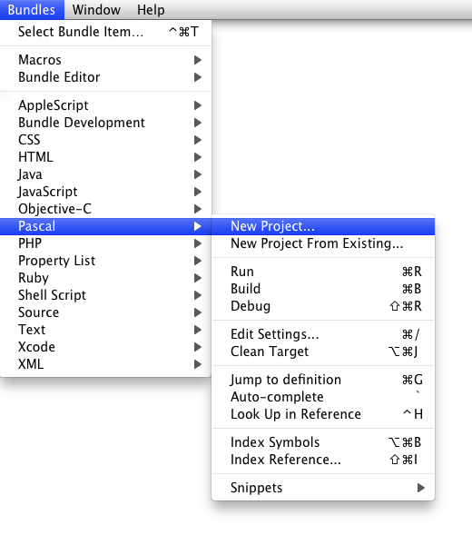
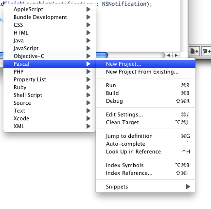
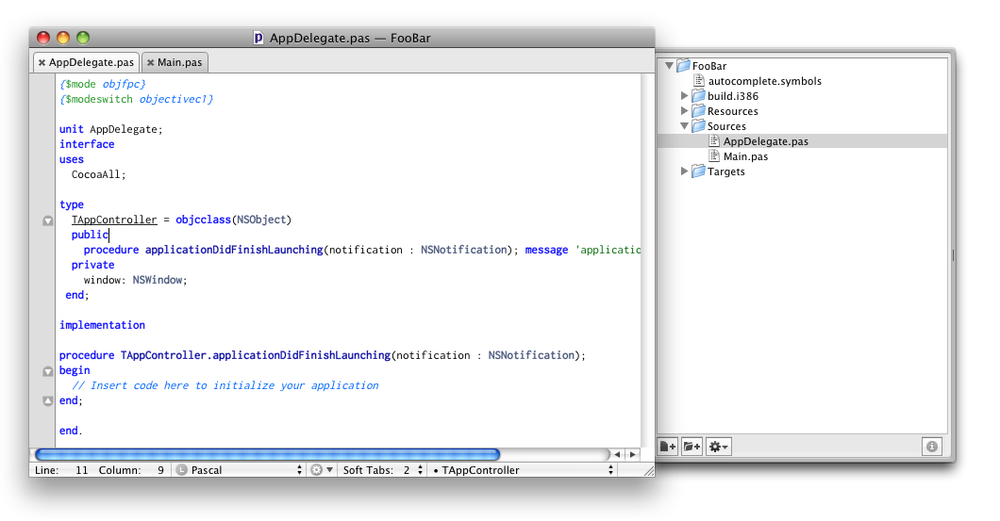
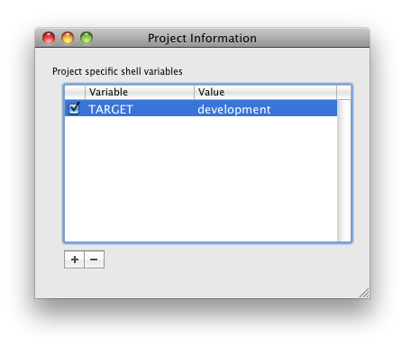
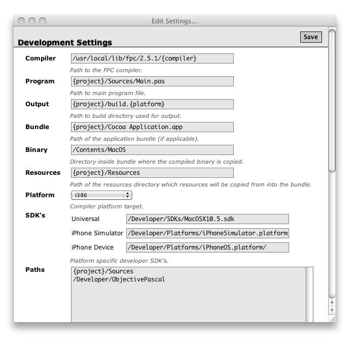
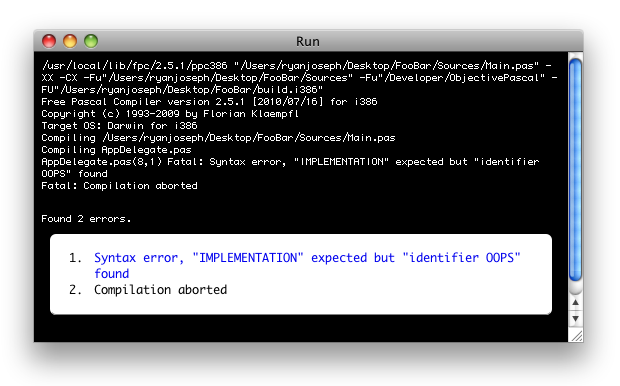
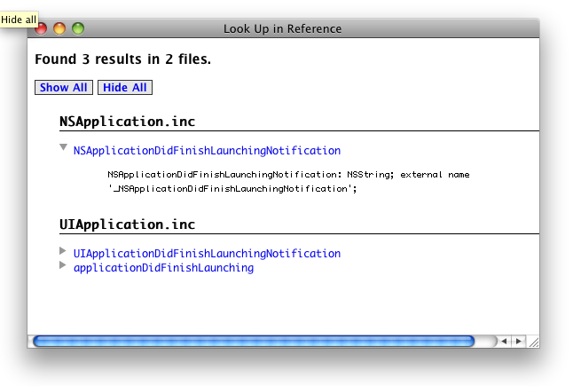
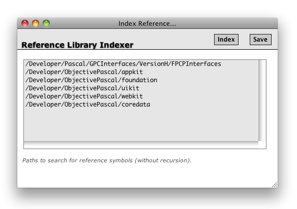
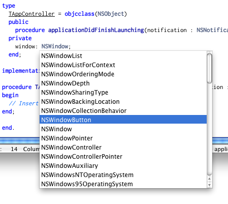

The Pascal.tmbundle bundle adds syntax support for standard, Object and Objective Pascal dialects along with compiler utilities for FPC and GDB terminal support which together make a pretty complete IDE experience. TextMate is a simple yet very powerful editor and when used as an IDE much easier to learn and use than Xcode. Most importantly TextMate is highly extensible so you can control how it works for you.
Table Of Contents
- Commands
- Main Window
- Creating Projects
- Targets
- Compiling & Running
- Function Reference
- Jumping to Definition
- Auto-Complete
- Cleaning Targets
All of the commands available are in the Bundle menu or window sub-menu as seen below. Note that you must have a document open before TextMate will allow you to use any items in the Bundle menu (an unfortunate limitation).
The window popup menu is located at the bottom of every window next to the source mode.
To learn more about how the TextMate editor works with its rich feature set read the TextMate Manual online. Because TextMate is so extensible you can modify the Pascal bundle to meet your needs by extending the syntax definitions, changing command key combinations or adding new snippets for example.
To create a new project select the New Project... item from the Bundle menu and choose a template location where you want to save.
If you want to translate an existing folder of Pascal source code into a TextMate project choose the New Project From Existing... item. After choosing the folder to translate the necessary files will be copied into the folder without affecting any of the existing files. You will probably need to change some fields in the target settings so that the compiler can locate your main program file and any additional source directories.
You can add additional project templates by placing them in /Library/Application Support/TextMate/Pascal Project Templates. To learn how to make a project template study the default templates in Pascal.tmbundle/Support/Project Templates as examples.
Projects can have an unlimited amount of targets which specify important settings required by the compiler. If you start from a project template everything will be filled in properly and you can just compile and run but often you will need to configure these to fit your projects needs.
The first step to using targets is to set the TextMate project variable TARGET which can be found by clicking the button in the lower right-hand corner of the project window drawer. By default a target named development will exist in all project folders but if you want to choose another target you must make sure an XML definition exists in /path/to/project/Targets. To create a new target simply duplicate the default target and change the file name (there will be a GUI for this eventually).
Editing Targets
Targets are plain XML files that can be edited by hand or with an editor but the preferred method is to use the Edit Settings window which can be found in the Bundle menu.
When changing target settings notice there are macros defined by {} characters which will be filled with values from the target when they are applied.
When you are finished making changes you must press the Save button located in the upper right-hand corner of the window.
To compile a project choose the Run, Build or Debug item in the Bundle menu. Output from the compiler will be reported within TextMate and errors printed in the console which can be tracked back to source code.
After compiling the application will be launched under the Terminal (unless the Build item was selected) where all output can be observed.
If you choose to Debug the application will be launched in the Terminal as well but under GDB as a standard debugging session. To learn more about GDB debugger on the command line visit their official web site. After learning a few basics commands it an be quite useful for most debugging scenarios.
Indexing Symbols
After compiling symbols generated in .ppu files by the compiler are parsed and indexed which are the basis for supporting the auto-complete and jump to definition features. For massive files such as MacOSAll.pas, CocoaAll.pas etc... the first pass can be very time consuming but not noticeable for smaller files (there is a notice in the console given when indexing is occurring). Files are only indexed when they are modified so in the case of MacOSAll it will only be indexed once per project.
You can also manually index symbols by pressing command-option-B or by choosing the Index Symbols item in the Bundle menu.
Copying Resources
If you specify a resource directory in the target settings files from that directory will be copied into the application bundle and XIB files compiled into NIB (which is required for iPhone applications to run). This process also includes .lproj localized resources directories.
While typing in the editor you can look up words in the Function Reference by pressing control-H or by choosing the Look Up in Reference item in the Bundle menu. The word found at the cursor location will be queried and the results returned in a window as seen below.
In order to efficiently query the the function reference for symbols Pascal source files must first be indexed using the Reference Library Indexer. To index the reference library choose the Index Reference item in the Bundle menu.
By default there are a list of paths which the indexer will use to search for Pascal source files. These standard paths may not be the same on your system and may be required to be changed or the source files on your system moved to match the paths.
If you want to add additional paths for indexing simply add a line to the list then press the Save button. When you are ready to index the source files found at the specified paths press the Index button and a spinning wheel appear then a message displayed when completed. Please note this may take a while depending on how many paths you specified and the speed of your Mac.
After a projects symbols have been indexed you can jump to a words symbol definition by pressing command-G or choosing the Jump to definition item in the Bundle menu. The word at the cursor location will be used for the query and if successfully the line will be selected in the file it was defined.
For this feature to work you must have a path in the target settings which the source file can be found at. Unlike the compiler however these paths are recursive and will search an unlimited number of directories below the specified source path. For this reason you must be careful to not specify directories that are too deep as it could cause performance issues when jumping to definitions.
Currently, if there are duplicate symbol entries for the selected word only the first will be displayed.
After a projects symbols have been indexed the they will appear in the auto-complete list which can be invoked by pressing the ~ button when the cursor is over a word you want to show completions for.
If you need to delete the build directory created by the compiler and other supporting files (like symbol tables) choose the Clean Target item in the Bundle menu. Only the build directory for the currently active target will be deleted.